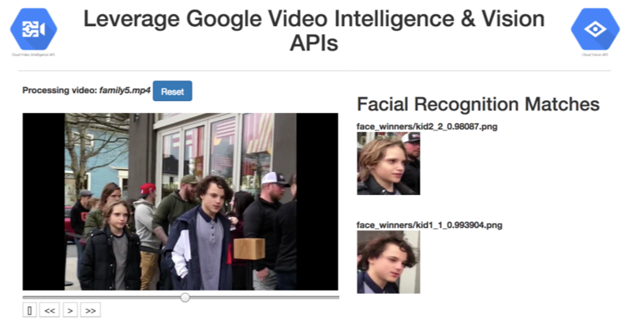
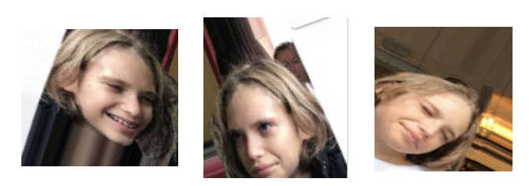

Google Video Intelligence, TensorFlow And Inception V3 - Recognizing Not-So-Famous-People
Practical walkthroughs on machine learning, data exploration and finding insight.
On YouTube:

This is the second part to the previous blog entry Google's Video Intelligence and Vision APIs - Automatically Recognize Actors and Download their Biographies in Real Time.
The above celebrity pipeline can chew through a celebrity video faster than you can say protagonist - and that’s the whole point!
Can we divert some of that speed and instight towards something other than finding celebrities? What if we wanted to identify regular people? Or any other entity not currently offered with Google Video Intelligence?
Yes, we can!

All we need to do is swap one step in the pipeline (albeit with some manual pre-processing work required). We remove the image web-search step and replace it with our own trained convolutional deep neural network. If you are trying to find family members on a video, then a web search using headshots probably won't help you (unless you're kids are super famous).
Enters…
Inception V3, Transfer Learning, And A Massive Modeling Shortcut
Inception V3 is the third inception version of convolutional deep neural networks (CNN) trained to recognize general object categories using the famous ImageNet dataset.
“The ImageNet project is a large visual database designed for use in visual object recognition software research. Over 14 million URLs of images have been hand-annotated by ImageNet to indicate what objects are pictured; in at least one million of the images, bounding boxes are also provided. ImageNet contains over 20 thousand ambiguous categories; a typical category, such as "balloon" or "strawberry", contains several hundred images.”
Inception V3 can differentiate between 1,000 different objects (image-net.org):

Transfer learning is a big deal in supervised CNN modeling. Simply put, you can ask a model already trained on a set of object to recognize different ones. As you may know, large models require a lot of data and huge processing power with specialized hardware. Having the ability of piggy backing powerful and publicly-available models is a huge time saver!
“Transfer learning or inductive transfer is a research problem in machine learning that focuses on storing knowledge gained while solving one problem and applying it to a different but related problem. For example, knowledge gained while learning to recognize cars could apply when trying to recognize trucks.”
If its the first time you hear about this, you may wonder how a model that has only been trained to recognize mundane things like cars, fruits, trees, etc. can also be used to differentiate between my children.
The best way to convince yourself is to try it out. It turns out that this approach does a good job with new data and new labels spliced right at the end of the network. But the main takeawy is that it would take efforts in the multiples with big hardware, a whole lot more data and serious hyperparameter-tuning knowledge to do this from scratch.
Getting Started
You need to install TensorFlow or pip install it on your machine:
pip install tensorflowYou’ll also need to copy the retrain.py script (https://github.com/tensorflow/tensorflow/blob/master/tensorflow/examples/image_retraining/retrain.py) to you local machine.
You Don't Need That Much Training Data
The approach of the "retrain.py" script is very clever. It does most of the heavy lifting for you. All you need to do is collect training data and place each category in its own folder. I want to analyze footage and be able to recognize if either of my kids is in a picture. So all I need to do is create a “kids_photos” folder underneath the "tf_file" folder and another set underneath that, one-per-category (i.e. one for kid1 and another for kid2 if you are modeling for two groups).
I collected about 40 headshots for each of my two kids and applied Keras ImageDataGenerator to generate thousands of additional versions of each with slight random alterations.

Your folder structure should look like the following:
retrain.py
tf_file
| - kids_photos
| - kid1
| - _0_1.jpg
| - _0_2.jpg
| - _0_3.jpg
…
| - kid2
| - _0_1.jpg
| - _0_2.jpg
| - _0_3.jpg
…
If your folder does look like the above, you are ready to transfer learn. You simply need to call the below retrain.py script in a terminal window with the following parameters.
Transfer Learning
This is the incredible part, all you need to get a new model using your own data and labels, is to run the following code:
python ./retrain.py
--bottleneck_dir=./tf_files/bottlenecks
--how_many_training_steps 5000
--learning_rate 0.01
--train_batch_size 10
--model_dir=./tf_files/inception
--output_graph=./tf_files/retrained_graph.pb
--output_labels=./tf_files/retrained_labels.txt
--image_dir ./tf_files/kids_photosThe first run takes time as it downloads inception and builds the bottleneck files (analysis of spliced images). As it models the new data, it spits out training messages just like any model does. It will return an accuracy score for training and validtion. You may need to run the model a couple of times (it runs a lot faster the second time around) and play around with parameters like “learning rate”, “train batch size”, and “how many training steps”.
In this example, the model did learn nicely in both training and validation:
2018-03-30 05:39:06.357276: Step 4999: Train accuracy = 100.0%
2018-03-30 05:39:06.357435: Step 4999: Cross entropy = 0.005487
2018-03-30 05:39:06.422331: Step 4999: Validation accuracy = 99.0% (N=100)
Final test accuracy = 98.3% (N=709)
Once you think the model can differentiate between categories within an acceptable level of accuracy, you are done.
Predicting On Live Data
Obviously, the whole point of the model is to run it on the output of our celebrity-finding engine but you can also run one-offs to see how your trained model works on a single image (from tensorflow-for-poets):
python -m scripts.label_image \
--graph=tf_files/retrained_graph.pb \
--image=tf_files/flower_photos/roses/2414954629_3708a1a04d.jpg
Additional Resouces
Another great resource on this topic is from TensorFlow’s own docs: How to Retrain an Image Classifier for New Categories.
Below is the full source code to run through a movie file, extract faces, run them through our custom-trained Inception model. Sorry it is a big clump but if you followed the first video: Google's Video Intelligence and Vision APIs - Automatically Recognize Actors and Download their Biographies in Real Time, this is a slight deviation from it:
import glob, os
import sys
import argparse
import math
import datetime
from google.cloud import videointelligence
from google.cloud import vision
from google.cloud import storage
from google.cloud.vision import types
import shutil
import numpy as np
import io
import tensorflow as tf
import skvideo.io
from PIL import Image, ImageDraw
import ffmpy
import sys
reload(sys)
sys.setdefaultencoding('utf8')
video_location = ""
def delete_blob(bucket_name, blob_name):
"""Deletes a blob from the bucket."""
storage_client = storage.Client()
bucket = storage_client.get_bucket(bucket_name)
blob = bucket.blob(blob_name)
blob.delete()
def init(movie_to_process, bucket_name):
# step 1 get video link
global video_location
# clean out directory structure
os.system('sudo rm -r tmp')
"""Deletes a blob from the bucket."""
storage_client = storage.Client()
# clean things up on GS
bucket = storage.Bucket(storage_client, bucket_name)
for obj in bucket.list_blobs(prefix='face_winners/'):
file_name = obj.name
delete_blob(bucket_name, file_name)
for obj in bucket.list_blobs(prefix='text_winners/'):
file_name = obj.name
delete_blob(bucket_name, file_name)
for obj in bucket.list_blobs(prefix='video_processing/'):
file_name = obj.name
delete_blob(bucket_name, file_name)
blob=bucket.blob('video_processing/' + movie_to_process)
blob.upload_from_filename(movie_to_process)
blob.make_public()
# step 2 find people
def analyze_labels(movie_to_process, bucket_name):
path = 'gs://' + bucket_name + '/video_processing/' + movie_to_process
""" Detects labels given a GCS path. """
video_client = videointelligence.VideoIntelligenceServiceClient()
features = [videointelligence.enums.Feature.LABEL_DETECTION]
mode = videointelligence.enums.LabelDetectionMode.SHOT_AND_FRAME_MODE
config = videointelligence.types.LabelDetectionConfig(
label_detection_mode=mode)
context = videointelligence.types.VideoContext(
label_detection_config=config)
operation = video_client.annotate_video(
path, features=features, video_context=context)
print('\nProcessing video for label annotations:')
result = operation.result(timeout=90)
print('\nFinished processing.')
frame_offsets = []
# Process frame level label annotations
frame_labels = result.annotation_results[0].frame_label_annotations
for i, frame_label in enumerate(frame_labels):
#if (frame_label.entity.description == 'person'):
print('Frame label description: {}'.format(
frame_label.entity.description))
for category_entity in frame_label.category_entities:
if (category_entity.description == 'person'):
print('\tLabel category description: {}'.format(
category_entity.description))
print(frame_label)
# Each frame_label_annotation has many frames,
# here we print information only about the first frame.
#for frame in frame_label.frames:
frame = frame_label.frames[0]
time_offset = (frame.time_offset.seconds +
frame.time_offset.nanos / 1e9)
print('\tFirst frame time offset: {}s'.format(time_offset))
print('\tFirst frame confidence: {}'.format(frame.confidence))
print('\n')
#frame_offsets.append(time_offset - 0.5)
#frame_offsets.append(time_offset + 0.5)
frame_offsets.append(time_offset)
return(sorted(set(frame_offsets)))
def extract_image_from_video(video_input, name_output, time_stamp):
ret = "Error"
try:
ret = os.system("ffmpeg -i " + video_input + " -ss " + time_stamp + " -frames:v 1 " + name_output)
# if all goes well FFMPEG will return 0
return ret
except ValueError:
return("Oops! error...")
def crop_image(input_image, output_image, start_x, start_y, width, height):
"""Pass input name image, output name image, x coordinate to start croping, y coordinate to start croping, width to crop, height to crop """
input_img = Image.open(input_image)
# give the image some buffer space
start_with_buffer_x = int(start_x - np.ceil(width/5))
start_with_buffer_y = int(start_y - np.ceil(height/5))
width_with_buffer = int(start_x + width + np.ceil(width/5))
height_with_buffer = int(start_y + height + np.ceil(height/5))
box = (start_with_buffer_x, start_with_buffer_y, width_with_buffer, height_with_buffer)
output_img = input_img.crop(box)
output_img.save(output_image +".jpg")
return (output_image +".jpg")
def detect_face(face_file, max_results=4):
# can you find a face and return coordinates
client = vision.ImageAnnotatorClient()
content = face_file.read()
image = types.Image(content=content)
# return coords of face
return client.face_detection(image=image).face_annotations
def highlight_faces(image, faces):
"""Draws a polygon around the faces, then saves to output_filename.
Args:
image: a file containing the image with the faces.
faces: a list of faces found in the file. This should be in the format
returned by the Vision API.
output_filename: the name of the image file to be created, where the
faces have polygons drawn around them.
"""
faces_boxes = []
im = Image.open(image)
draw = ImageDraw.Draw(im)
for face in faces:
box = [(vertex.x, vertex.y)
for vertex in face.bounding_poly.vertices]
draw.line(box + [box[0]], width=5, fill='#00ff00')
faces_boxes.append([box[0][0], box[0][1], box[1][0] - box[0][0], box[3][1] - box[0][1]])
return (faces_boxes)
def annotate(path):
"""Returns web annotations given the path to an image."""
client = vision.ImageAnnotatorClient()
if path.startswith('http') or path.startswith('gs:'):
image = types.Image()
image.source.image_uri = path
else:
with io.open(path, 'rb') as image_file:
content = image_file.read()
image = types.Image(content=content)
web_detection = client.web_detection(image=image).web_detection
return web_detection
def get_stills(movie_to_process, bucket_name, timestamps_to_pull):
video_location = 'https://storage.googleapis.com/' + bucket_name + '/video_processing/' + movie_to_process
storage_client = storage.Client()
max_results = 3
# add a buffer before and after a timestamp to get a few extra stills
timestamps_to_pull_tmp = timestamps_to_pull + [x - 0.3 for x in timestamps_to_pull[:-1]] + [x + 0.3 for x in timestamps_to_pull[1:]] # + timestamps_to_pull
# remove anything that is negative from timestamps_to_pull_tmp
timestamps_to_pull_tmp = [ts for ts in timestamps_to_pull_tmp if ts >= 0]
# clear out stills folder
if len(timestamps_to_pull_tmp) > 0:
# create directory structure
os.system('mkdir tmp')
os.system('mkdir tmp/face_images')
os.system('mkdir tmp/face_winners')
filepath = 'tmp/'
# make stills
cnt_ = 0
for ttp in timestamps_to_pull_tmp:
# get the still image at that timestamp
time_stamp = str(datetime.timedelta(seconds=ttp))
file = "still_" + str(cnt_) + ".jpg"
filePathAndName = filepath + file
print('filename: ' + time_stamp)
ret = extract_image_from_video(video_input = video_location, name_output = filePathAndName, time_stamp = time_stamp)
print(ret)
# shutil.copy(filename, '/static/images/')
cnt_ += 1
# find face on still image
with open(filePathAndName, 'rb') as image:
faces = detect_face(image, max_results)
print('Found {} face{}'.format(
len(faces), '' if len(faces) == 1 else 's'))
print('Looking for a face {}'.format(filePathAndName))
# Reset the file pointer, so we can read the file again
image.seek(0)
faces_boxes = highlight_faces(filePathAndName, faces) #, filePathAndName)
print('faces_boxes:', faces_boxes)
if len(faces_boxes) > 0:
# image had a face
count = 0
for face_box in faces_boxes:
# cv2.imwrite("frame%d.jpg" % count, image) # save frame as JPEG file
saved_name = crop_image(filePathAndName, "tmp/face_images/" + file.split('.')[0] + str(count) + '_faces', face_box[0], face_box[1], face_box[2], face_box[3])
count += 1
def predict_on_live_data(image_folder, bucket_name):
counter_ = 0
storage_client = storage.Client()
# get all custom entities found by video intelligence
all_files = glob.glob(os.path.join(image_folder, "*.jpg"))
print('all_files: ', all_files)
for file in all_files:
print(file)
# Read in the image_data
image_data = tf.gfile.FastGFile(file, 'rb').read()
# Loads label file, strips off carriage return
label_lines = [line.rstrip() for line in tf.gfile.GFile("tf_files/retrained_labels.txt")]
# Unpersists graph from file
with tf.gfile.FastGFile("tf_files/retrained_graph.pb", 'rb') as f:
graph_def = tf.GraphDef()
graph_def.ParseFromString(f.read())
_ = tf.import_graph_def(graph_def, name='')
with tf.Session() as sess:
# Feed the image_data as input to the graph and get first prediction
softmax_tensor = sess.graph.get_tensor_by_name('final_result:0')
predictions = sess.run(softmax_tensor, {'DecodeJpeg/contents:0': image_data})
# Sort to show labels of first prediction in order of confidence
top_k = predictions[0].argsort()[-len(predictions[0]):][::-1]
for node_id in top_k:
human_string = label_lines[node_id]
score = predictions[0][node_id]
if score > 0.987:
counter_ += 1
# move file to storage bucket
print('%s (score = %.5f)' % (human_string, score))
print('file name:', file)
potential_names = human_string + '_' + str(counter_) + '_' + str(score) + '.png'
# we have a winner
new_name = 'tmp/face_winners/' + potential_names
shutil.copy(file,new_name)
# upload it on gs
bucket = storage_client.get_bucket(bucket_name)
blob=bucket.blob('face_winners/' + potential_names)
blob.upload_from_filename(new_name)
blob.make_public()
# set google storage work space
BUCKET_NAME = ''
MOVIE_TO_PROCESS = ''
if __name__ == "__main__":
if len(sys.argv) == 3:
MOVIE_TO_PROCESS = sys.argv[1]
BUCKET_NAME = sys.argv[2]
# start things off clean
print('Cleaning up...')
init(MOVIE_TO_PROCESS, BUCKET_NAME)
print('Copying video to the cloud...')
timestamps_to_pull = analyze_labels(MOVIE_TO_PROCESS, BUCKET_NAME)
print('Searching for people...')
get_stills(MOVIE_TO_PROCESS, BUCKET_NAME, timestamps_to_pull)
print('Processing people...')
predict_on_live_data(image_folder="tmp/face_images/", bucket_name=BUCKET_NAME)
print('All done...')
else:
print('Wrong argument inputs')